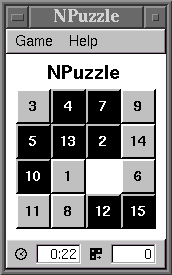

My Agenda VR3 Projects
This page includes information about my earlier spare time software projects targeted to Agenda VR3 platform. I have not used my VR3 for years so these projects have been dead for some time (I still have my VR3 somewhere but I don't know if it works anymore).
Projects described here include:
Johannes Lehtinen <johannes.lehtinen@iki.fi>
NPuzzle
 NPuzzle is a simple implementation of 15-puzzle (or 8-puzzle or 24-puzzle) and I wrote it mostly to learn how to work with FLTK user interface library. NPuzzle has been tested on Agenda VR3 and I tried to give it the VR3 look and feel. The development was done in an ordinary Linux/X environment and the VR3 port was done simply by cross compiling the program for MIPS. NPuzzle is distributed under the GNU General Public License.
To compile the source code distribution on standard Linux box, you must have the following installed. For help on compiling the native VR3 binary, see the end of INSTALL file in the source package.
Use one of the links below to download a source code or binary distribution.
- npuzzle-0.2.1.tar.gz (46.2 kB)
- npuzzle-0.2.1.vrp (20.0 kB)
- npuzzle-0.2.1 for Agenda VR3 (29.6 kB)
You need only the npuzzle binary to run the game. Just copy the binary
to a suitable place on a flash disk (using rsync, for
example) and make a symbolic link
/home/default/.wmx/Games/NPuzzle pointing to
the binary. Remember to make sure that the downloaded binary has execute
permissions (chmod a+rx npuzzle).
VRFig
VRFig is a simple tool for drawing figures. It has been developed for PDA use and especially for the genda Computing VR3 Linux PDA. The goal is to be able to plan things and sketch technical drawings on the road without always dragging a laptop computer around. The intended ultimate use could be sketching or browsing a software architecture diagram while sitting in a bus, for example.
For more information, go to VRFig page.